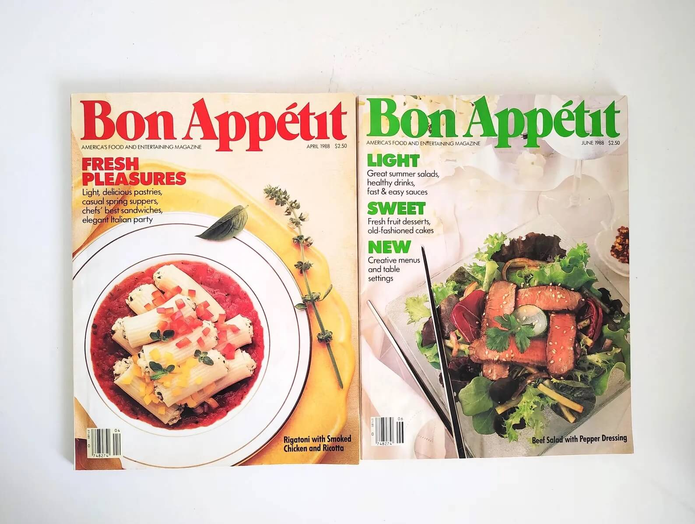
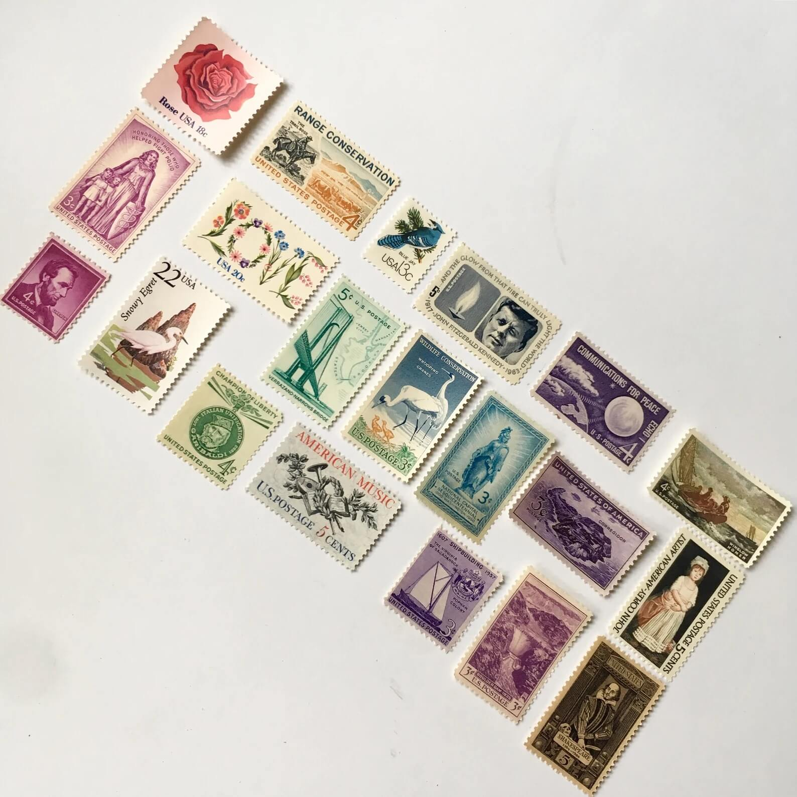
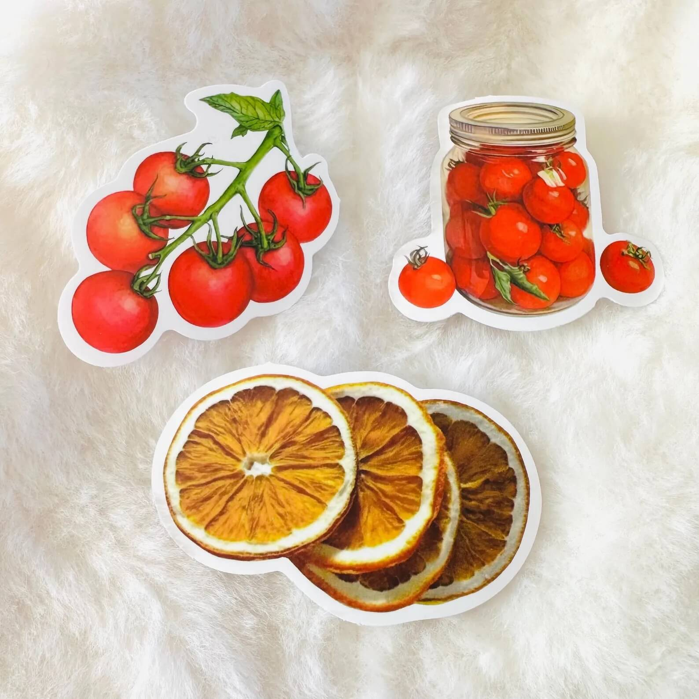
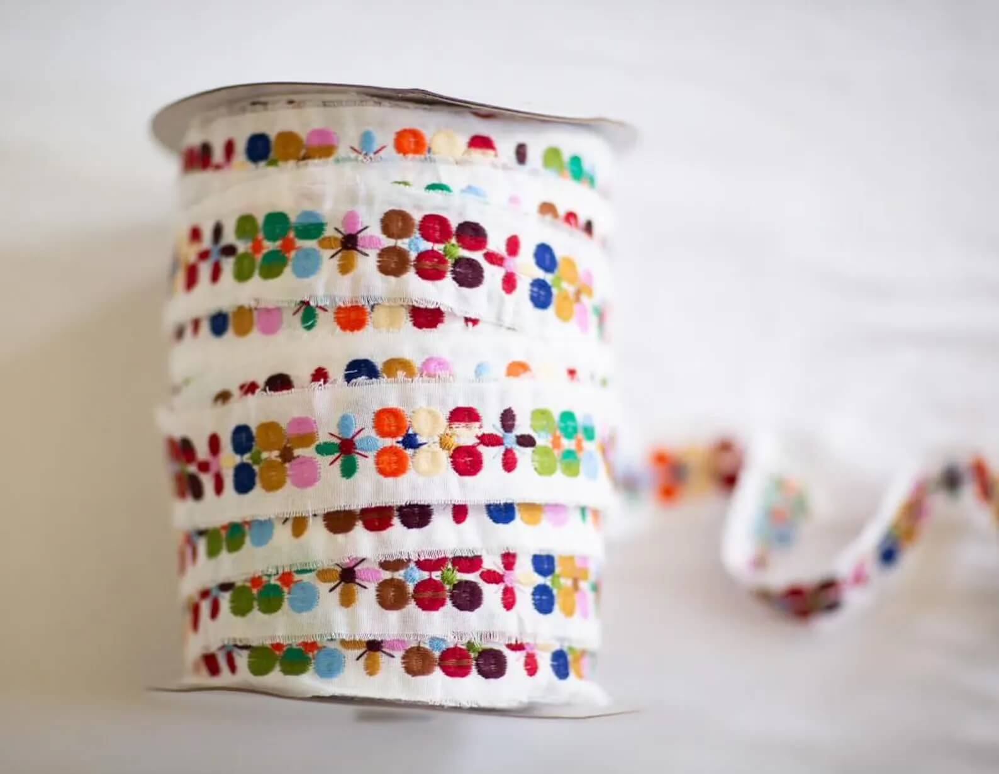
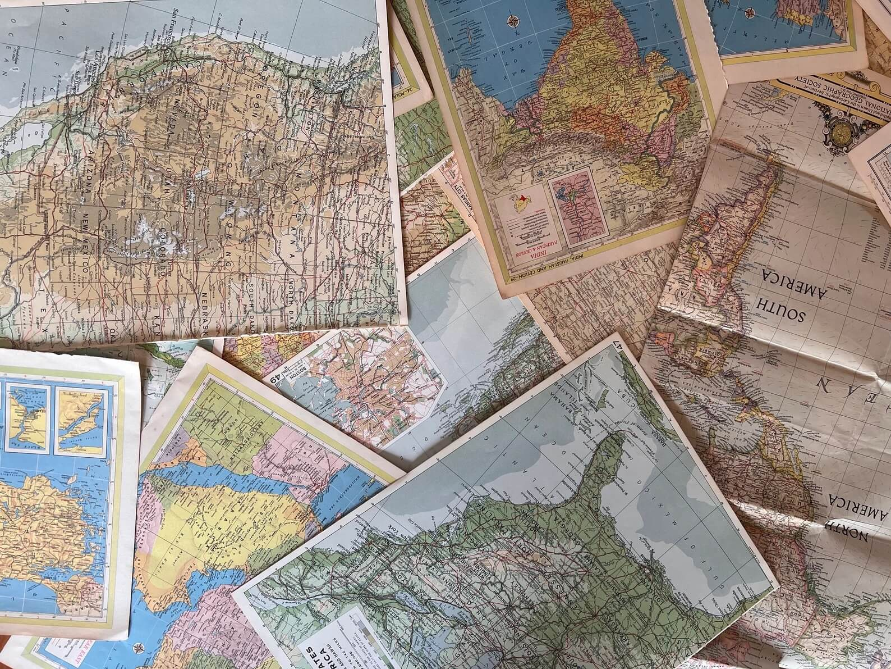
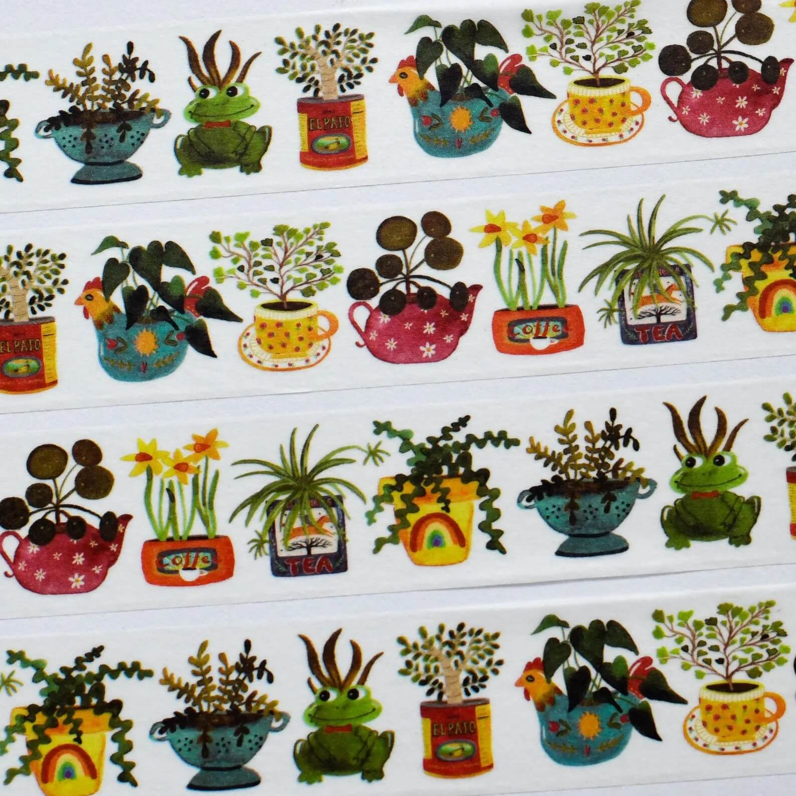
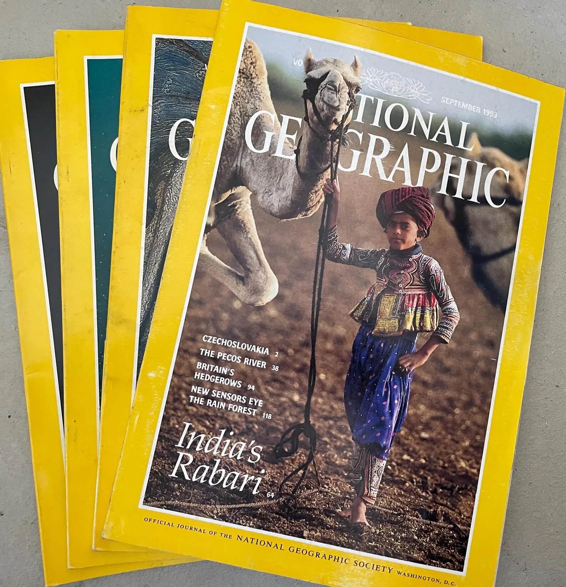
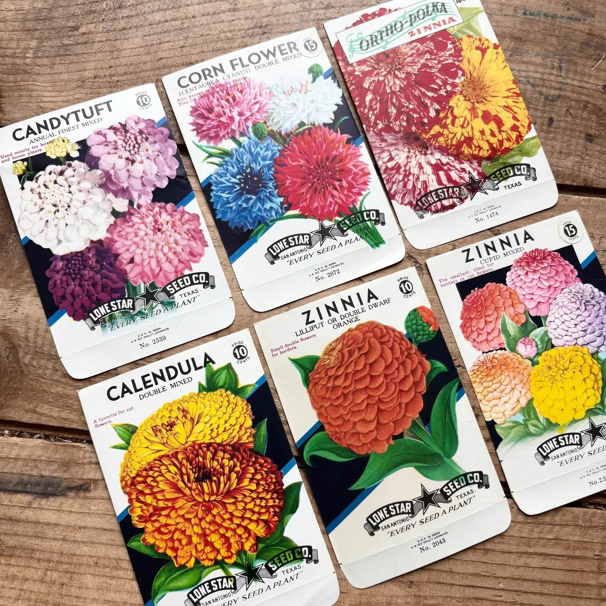

Looking for some unique ephemera to add to your junk journal? Trying to de-stash? Check out what our community has to offer!
Share Items
Search for Items

Two Bon Appétit magazines up for grabs!

Assortment of vintage postage stamps.

Some colorful stickers!

A roll of colorful ribbon.

Assortment of vintage maps.

A roll of colorful washi tape.

Assortment of National Geographic magazines.

Assortment of vintage seed packets.